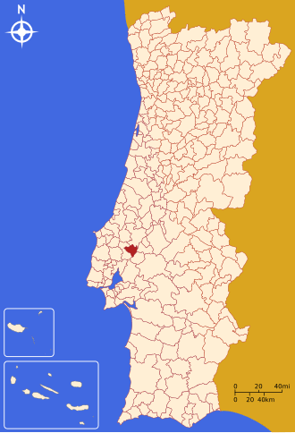

Localização
Situado a cerca de 50 quilómetros de Lisboa - cujo aeroporto internacional é a ligação aérea mais próxima -, e a 15 quilómetros da capital de distrito (Santarém), o Cartaxo está bem servido por vias rodoviárias e ferroviárias. O nó direto de acesso à A1, a variante à EN 365-2 – de ligação ao nó da A1 de Aveiras de Cima –, bem como a EN3, que atravessa o concelho fazendo a ligação entre o Carregado e Santarém, são as suas principais vias de acesso, que permitem ao concelho afirmar a sua centralidade na região e no país. O concelho é também servido pela Linha Ferroviária do Norte, sendo a estação do Setil a mais importante, a qual desde sempre fez parte da rede ferroviária nacional de ligação entre o norte e o sul do país. As estações ferroviárias de Santana e do Reguengo são também ponto de partida e de chegada de comboios, valorizando a mobilidade regional.
